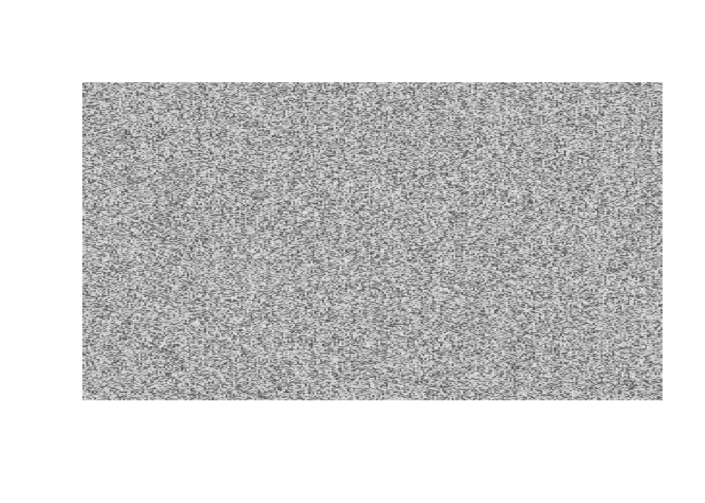
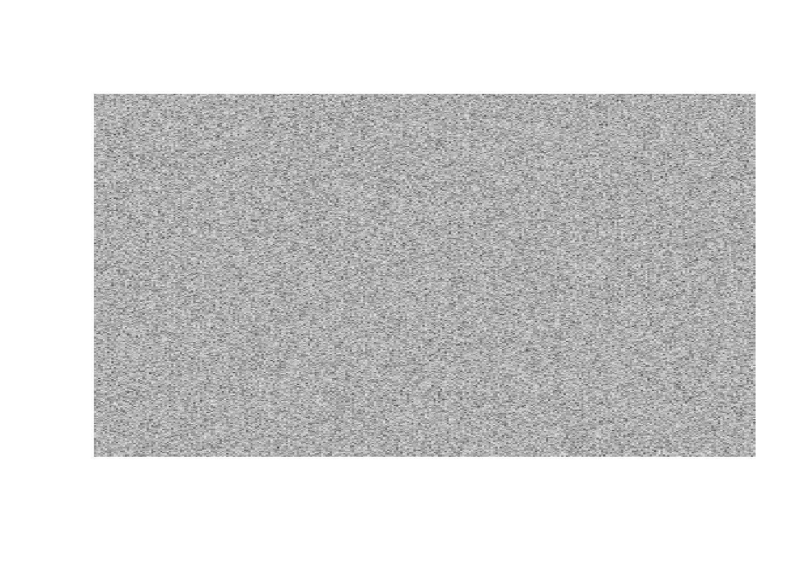

getwd()[1] "C:/Users/jocta/Documents/R_projects/UdeSA/MVD/01_tutorial/notebooks"Quarto es un sistema de publicación técnica y científica de código abierto que combina texto con formato con las funcionalidades de R, Python, Julia. Es una herramienta independiente que viene integrada con las versiones recientes de RStudio. Los archivos usan la extensión .qmd, como este archivo.
Hola,e sta es una modificaciond e prueba
Se vale de una librería (rmarkdown) que viene embebida con la instalación de RStudio, y se carga por defecto en todas las sesiones.
Con Quarto podemos integrar el código a la comunicación de la información de forma transparente y reproducible. Esto es útil para comunicar resultados, colaborar con otros analistas y documentar los procesos.
Los componentes de un archivo Quarto son:
Code Cells: bloques de código
Texto Markdown: usa Pandoc para traducir lo que escribimos a cualquier otro formato (PDF, HTML, Word, etc.)
Encabezado YAML: metadata sobre las características del output
En los archivos .qmd el working directory por defecto es el directorio donde vive el archivo. Es muy útil tener a mano el cheatsheet oficial de markdown.
La principal ventaja de este tipo de archivos es que con solo cambiar el format en el encabezado del yaml podemos tener tanto un .pdf como un .html y otros tipos de formatos.
R es un buen lenguaje para introducir un público no programador en la ciencia de datos porque
es una herramienta diseñada específicamente para la ciencia de datos.
es un lenguaje de programación. A diferencia de Excel o lenguajes basados en tablas, es muy flexible para desarrollar soluciones a medida.
es de código abierto y gratuito. A diferencia de otras herramientas, tiene una comunidad muy activa que desarrolla funcionalidades nuevas constantemente y es muy flexible para crear visualizaciones y hacer estadística avanzada.
¿Es la mejor herramienta? Depende del contexto. En la práctica, la mayoría de los equipos de ciencia de datos usan una mezcla de herramientas (como R y Python), según las necesidades del problema.
Los paneles principales de RStudio son
la consola, donde se ejecuta el código R y se imprimen las respuestas de R.
el panel de variables (o Environment), donde se describen los objetos que almacenamos en memoria.
El panel de salidas gráficas (Plots), donde se visualizan los gráficos.
Un script es una secuencia de comandos que se guarda como un archivo de texto. Luego este archivo puede enviarse a R para ser ejecutado línea por línea. Los scripts se guardan con extensión .R o .r.
Para escribir un script podemos usar el editor de RStudio (File --> New File --> R Script). RStudio guardará automáticamente el contenido del editor al salir y lo cargará automáticamente al volver a abrirlo. Sin embargo, es una buena idea guardar los scripts regularmente.
En general es conveniente almacenar juntos todos los archivos asociados con un proyecto dado: datos de entrada, scripts, resultados, informes, etc. El soporte de RStudio para esta forma de trabajo son los proyectos.
Para crear un proyecto ir a File --> New project. Al abrir un proyecto, el directorio de trabajo (working directory) pasa a ser la raíz del proyecto.
getwd()[1] "C:/Users/jocta/Documents/R_projects/UdeSA/MVD/01_tutorial/notebooks"De esta manera, podemos trabajar únicamente con rutas relativas y hacemos que nuestros análisis sean reproducibles. Todo lo que necesitamos está en un solo lugar y separado del resto de los proyectos.
En el panel de Files podemos ir a More --> Show Folder in New Window para gestionar los archivos desde el explorador del OS.
Veamos algunos fundamentos de R. Podemos ir ejecutando código del editor en la consola con Ctrl+Enter.
mi_numero <- 12
mi_numero[1] 12Con el operador de asignación estamos guardando un número en una variable cuyo nombre es mi_numero, que ahora aparece en el panel de variables. Es aconsejable usar nombres descriptivos cuando almacenamos objetos.
# con numeral iniciamos un comentario
mi_numero <- 15 # las variables son mutables
mi_numero = 15 # también podemos usar = para asignar
otro_numero = mi_numero # podemos instanciar nuevos a partir de otros ya instanciadosLos operadores son funciones de 1 o 2 argumentos. El operador más utilizado es el de asignación (<- o =). Hay muchos otros.
Operadores aritméticos:
x <- 3
y <- 10.82
y + x # suma [1] 13.82y - x # resta [1] 7.82y * x # multiplicacion [1] 32.46y / x # division [1] 3.606667x**y # exponente [1] 145362.4x^y # exponente[1] 145362.4Operadores relacionales: <, <=, >, >=, ==, y !=.
x <- 3
y <- 10
x == 1 [1] FALSEx == y [1] FALSEy > x [1] TRUEy != x[1] TRUEOperadores lógicos: !, &, y |.
TRUE [1] TRUE!FALSE [1] TRUE!F [1] TRUEF & T [1] FALSEF | T [1] TRUEx == 1 & y == 4[1] FALSEx == 1 | y == 80 [1] FALSE!(x > y) # equivale a x <= y[1] TRUER nos permite almacenar datos de distinto tipo. Para consultar el tipo de dato de un objeto podemos usar la función typeof(). Veamos los formatos de datos más comunes.
Datos numéricos (“double” o “integer”).
TRUE [1] TRUEtypeof(5) [1] "double"typeof(5) [1] "double"typeof(5L)[1] "integer"Lógicos o booleanos (“logical”).
typeof(TRUE) [1] "logical"typeof(!F)[1] "logical"Cadenas de caracteres o strings (“character”).
typeof("hola!") [1] "character"typeof("5") [1] "character"typeof("TRUE") [1] "character"NA es el valor que se usa para representar valores no disponibles o faltantes (Not Available). En general, estos valores requieren ser manipulados de maneras particulares.
5>= NA[1] NANA + 10 *4[1] NAPara saber si un valor es desconocido o si una variable contiene valores desconocidos, debemos usar la función is.na().
is.na(NA)[1] TRUEAdemás de los tipos de datos, R ofrece distintos tipos de objetos para almacenar datos. Los fundamentales son los siguientes.
Los vectores (atómicos) admiten un único tipo de dato (numérico, character, lógico, etc.) y una sola dimensión. Los podemos crear con la función c() de concatenar.
mis_numeros <- c(0, 2.5, 5, 3, 8, NA) # concatenar
typeof(mis_numeros) [1] "double"length(mis_numeros)[1] 6# en realidad un elemento suelto ES un vector
length(mi_numero) [1] 1length("hola que tal")[1] 1mis_strings <- c("a", "b", "c", "d", "X")
typeof(mis_strings) [1] "character"mis_logicos <- c(F, T, F, T, T)
typeof(mis_logicos) [1] "logical"todo_junto <- c(mis_strings, mis_logicos)
typeof(todo_junto) [1] "character"Podemos extraer elementos específicos de los vectores usando corchetes (indexing o subsetting).
# con enteros
mis_numeros[1] [1] 0mis_numeros[c(1,5)] [1] 0 8mis_numeros[-4][1] 0.0 2.5 5.0 8.0 NAmi_numero[1] # un "elemento" ES un vector [1] 15# con booleanos que actúen de filtro
mis_strings[mis_logicos] [1] "b" "d" "X"mis_numeros[mis_numeros > 4][1] 5 8 NALas matrices son objetos que admiten un único tipo de dato (numérico, character, lógico, etc.) y tienen dos dimensiones (filas y columnas). Las podemos construir con matrix().
mi_matriz <- matrix(data=1:25, nrow=5, ncol=5)
mi_matriz [,1] [,2] [,3] [,4] [,5]
[1,] 1 6 11 16 21
[2,] 2 7 12 17 22
[3,] 3 8 13 18 23
[4,] 4 9 14 19 24
[5,] 5 10 15 20 25class(mi_matriz)[1] "matrix" "array" Y podemos extraer elementos con subsetting:
mi_matriz[1,][1] 1 6 11 16 21mi_matriz[1,4][1] 16mi_matriz[,2][1] 6 7 8 9 10Las listas (o vectores recursivos) son secuencias de objetos que pueden ser de cualquier tipo.
nombres <- c("juan", "pedro", "ana")
edades <- c(30, 36, 21, 20, 18, 42, 61)
mi_lista <- list(nombres, edades, mi_matriz)
mi_lista[[1]]
[1] "juan" "pedro" "ana"
[[2]]
[1] 30 36 21 20 18 42 61
[[3]]
[,1] [,2] [,3] [,4] [,5]
[1,] 1 6 11 16 21
[2,] 2 7 12 17 22
[3,] 3 8 13 18 23
[4,] 4 9 14 19 24
[5,] 5 10 15 20 25Podemos hacer subsetting sobre las listas sucesivamente para explorarlas. Y los elementos de una lista pueden ser listas!
mi_lista[1] [[1]]
[1] "juan" "pedro" "ana" mi_lista[[1]] [1] "juan" "pedro" "ana" mi_lista[[1]][2] [1] "pedro"mi_lista[[3]][1, ][1] 1 6 11 16 21Los data frames son un tipo especial de lista cuyos elementos son vectores de la misma longitud.
nombre <- c("juan", "pedro", "ana")
edad <- c(20, 30, 55)
altura <- c(1.63, 1.80, 1.75)
mi_df <- data.frame(nombre, edad, altura)
mi_df nombre edad altura
1 juan 20 1.63
2 pedro 30 1.80
3 ana 55 1.75Podemos consultar los elementos con subsetting por nombre o posición:
mi_df[, 1] [1] "juan" "pedro" "ana" mi_df["nombre"] nombre
1 juan
2 pedro
3 anami_df[["nombre"]] [1] "juan" "pedro" "ana" mi_df$nombre [1] "juan" "pedro" "ana" mi_df[3, "edad"][1] 55R tiene funciones internas que podemos aplicar a objetos y obtener resultados. Las funciones pueden recibir una entrada o input (argumentos), ejecutan instrucciones y pueden devolver una salida o output. Veamos algunos ejemplos:
length(mis_numeros) [1] 6dim(mi_matriz) [1] 5 5names(mi_df) [1] "nombre" "edad" "altura"names(mi_lista)NULLOtras funciones muy usadas son:
rep(5, 10) [1] 5 5 5 5 5 5 5 5 5 51:20 [1] 1 2 3 4 5 6 7 8 9 10 11 12 13 14 15 16 17 18 19 20seq(1, 20, 2) [1] 1 3 5 7 9 11 13 15 17 19sample(1:10, 15, replace=T) [1] 5 1 6 4 4 9 1 7 4 8 1 3 9 9 2unique(c(2,3,8,3,2)) [1] 2 3 8rm(mi_lista)Muchos estadísticos son funciones que podemos aplicar a vectores numéricos:
mean(0:100) [1] 50mis_numeros[1] 0.0 2.5 5.0 3.0 8.0 NAmean(mis_numeros) [1] NAmean(mis_numeros, na.rm=T) [1] 3.7min(mis_numeros, na.rm=T) [1] 0max(mis_numeros, na.rm=T) [1] 8sd(mis_numeros, na.rm=T) [1] 2.991655quantile(mis_numeros, na.rm=T) 0% 25% 50% 75% 100%
0.0 2.5 3.0 5.0 8.0 R es un lenguaje de programación y como tal nos ofrece muchas funcionalidades para ejecutar instrucciones muy diversas de manera sistemática. Vamos a ver superficialmente algunas.
Si queremos ejecutar instrucciones parecidas muchas veces, copiar y pegar seguramente es subóptimo. Por ejemplo,
# queremos generar muchas imágenes aleatorias en blanco y negro
nums1 <- sample(0:255, size=300*300, replace=T)
mat1 <- matrix(nums1, nrow=300, ncol=300)
nums2 <- sample(0:255, size=300*300, replace=T)
mat2 <- matrix(nums2, nrow=300, ncol=300)
nums3 <- sample(0:255, size=300*300, replace=T)
mat3 <- matrix(nums3, nrow=300, ncol=300)
image(mat1, axes=FALSE, col = gray.colors(255))
Esto es poco legible y muy susceptible a bugs (si quiero actualizar el código tengo que cambiarlo muchas veces; al copiar y pegar me puedo olvidar de cambiar un nombre). Entonces, podemos escribir nuestras propias funciones:
matriz_aleatoria <- function(rows, cols, min=0, max=255) {
nums <- sample(min:max, size=rows*cols, replace=T)
mat <- matrix(nums, nrow=rows, ncol=cols)
return(mat)
}
# todo lo que asignemos adentro de la fn NO existe fuera de este entorno. Podemos llamar acá objetos fuera del entorno de la fn, pero no es recomendable en general.mat1 <- matriz_aleatoria(300, 300, min=0, max=255)
mat2 <- matriz_aleatoria(300, 300, min=0, max=255)
mat3 <- matriz_aleatoria(300, 300, min=0, max=255)
image(mat1+mat2+mat3, axes=FALSE, col = gray.colors(255))
Ahora separamos el código de su ejecución. Esto es más legible, más fácil de actualizar y reduce la probabilidad de errores.
Podemos ejecutar código de manera condicional (cuando se cumple una condición).
promedio <- mean(mis_numeros, na.rm=T)
log_promedio <- 0
if (promedio > 0) {
# se ejecuta si la cond. es TRUE
log_promedio <- log(promedio)
}
print(log_promedio)[1] 1.308333# equivalente:
promedio <- mean(mis_numeros, na.rm=T)
if (promedio > 0) {
# se ejecuta si la cond. es TRUE
log_promedio <- log(promedio)
} else {
# se ejecuta si la cond. es FALSE
log_promedio <- 0
}
print(log_promedio)[1] 1.308333# multiples condiciones encadenadas:
promedio <- mean(mis_numeros, na.rm=T)
promedio <- -12
if (promedio > 0) {
print(log(promedio))
} else if (promedio == 0) {
print(0)
} else {
print("ERROR!")
}[1] "ERROR!"Otra herramienta para reducir la duplicación de código es la iteración. Nos sirve cuando queremos repetir la misma operación muchas veces.
# En general no deberíamos copiar muchas veces el mismo código
mat1 <- matriz_aleatoria(300, 300, min=0, max=255)
mat2 <- matriz_aleatoria(300, 300, min=0, max=255)
mat3 <- matriz_aleatoria(300, 300, min=0, max=255)
# ... # Suele ser conveniente hacer algo de este estilo
matrices <- list()
# objeto para guardar los outputs
for (i in 1:100) {
# iterador
matrices[[i]] <- matriz_aleatoria(300, 300, min=0, max=255)
}Las librerías o paquetes son conjuntos de funciones empaquetadas. Dado que R es de código abierto, los usuarios pueden expandir la funcionalidad de R desarrollando y disponibilizando librerías para el resto de la comunidad. Gracias a esto, las capacidades de R crecen continuamente, sin necesidad de lanzamientos centralizados a gran escala.
Con install.packages("paquete") podemos instalar librerías que estén disponibles en CRAN (el repositorio oficial de R). Una vez instalado, podemos cargar el paquete para usar sus funciones con library(paquete). En una computadora dada alcanza con instalar los paquetes una sola vez; pero para usarlos, tenemos que cargarlo en cada nueva sesión de R.
# install.packages("tidyverse") #comentar para renderizarlibrary(tidyverse)── Attaching core tidyverse packages ──────────────────────── tidyverse 2.0.0 ──
✔ dplyr 1.1.4 ✔ readr 2.1.6
✔ forcats 1.0.1 ✔ stringr 1.6.0
✔ ggplot2 4.0.1 ✔ tibble 3.3.0
✔ lubridate 1.9.4 ✔ tidyr 1.3.2
✔ purrr 1.2.0
── Conflicts ────────────────────────────────────────── tidyverse_conflicts() ──
✖ dplyr::filter() masks stats::filter()
✖ dplyr::lag() masks stats::lag()
ℹ Use the conflicted package (<http://conflicted.r-lib.org/>) to force all conflicts to become errorstidyverse es un conjunto de paquetes ampliamente usado por la comunidad (incluye dplyr, tidyr, ggplot2, lubridate, purrr, etc.).
Si queremos ser explícitos sobre el origen de una función, podemos escribir con la sintaxis paquete::funcion() – por ejemplo, ggplot2::ggplot().
Una de las funciones más usadas de tidyverse es el operador pipe de la librería magrittr: %>%. Este operador nos permite modificar el orden en el que escribimos las funciones para volverlas más legibles:
mi_vector <- c(8, 9, 1, -10, 1,0, 0, 9, 56, 30)
head(sort(mi_vector)) # en este caso leemos de adentro para afuera[1] -10 0 0 1 1 8mi_vector %>% sort() %>% head() # leemos de izquierda a derecha[1] -10 0 0 1 1 8mi_vector %>%
sort() %>%
head() # o de arriba hacia abajo[1] -10 0 0 1 1 8Dejo todos los comandos que utilizamos para manipular Git por consola.
Configuración global de Git que se hace una sola vez:
git config --global user.name <usuario>
git config --global user.email <email>Moverse al directorio de interés y listar los archivos que contiene (existía previamente a todo lo que hicimos)
cd R_projects/UdeSA/MVD
dirInicializar Git y chequear el estado de archivos
git init
git statusAgregar un archivo a la vez o varios al staging. También podemos usar “.” para subir todo lo untracked al staging
git add <archivo1> git add <archivo2> <archivo2>
git add .Sacamos una instantánea del staging haciendo un commit con un mensaje “-m”
git commit -m "primer commit"Una vez creado el repositorio remoto en GitHub podemos vincularlo con el repo local
git remote add origin https://github/<usuario>/<repo>.git
git push -u origin masterPara clonar un repositorio de la nube podemos hacerlo con
git clone https://github/<usuario>/<repo>.gitListar todas las ramas disponibles
git branchCrear una rama nueva que diverge de la principal en el momento del tiempo en el cual nos situamos
git branch n_featurePara cambiarse de rama
git checkout n_featureDespués de trabajar en esta rama (hace por lo menos un commit), podemos publicarla dentro del remoto
git push origin n_featurePodemos unir la rama alternativa con master
git checkout master
git merge n_featureSi un mismo archivo se modifica en ambas ramas habrá un conflicto porque Git no sabe con cual de las dos versiones queremos quedarnos. Entonces pondrá en pausa el proceso
git status # nos mostrara qué archivos están en conflictoPodemos abrir el archivo y resolver línea por línea los conflictos (que Git marca con felchas y símbolos “>>>”) ó, de ser inmanejable el número de diferencias, abortar con
git merger --abortSi optamos por resolver el conflicto y lo logramos hay que agregar la resolución a la nueva instantánea
git add <archivoconconflicto> # subimos al stage
git diff <archivoconconflicto> # Para ver las modificaciones que hicimos si queremos
git commit -m "solucioné el conflicto de <archivoconconflicto> en el mergre"Y listo.
Por otro lado, para traer los cambios del remoto sin mergearlos con el local
git fetch originVemos qué archivos se modificaron
git diff --stat master origin/master # los nombres
git diff master origin/master # todas las modificacionesMergeamos la remota y la local
git merge origin/masterEl Pull es equivalente a hacer Fetch + Merge (se suele usar mucho más que los dos comandos por separado en la práctica)
git pull